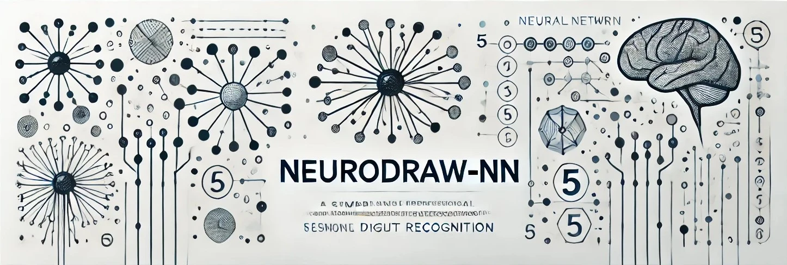

NeuroDraw
Neural Network Visualization
A hands-on educational project to understand neural networks by implementing one from scratch

Personal Project
Project Overview
NeuroDraw is a Python application created for educational purposes to demonstrate how neural networks work at their most basic level. Instead of using sophisticated libraries like TensorFlow or PyTorch, this project implements a simple neural network from scratch, making it easier to understand the core concepts of neural networks.
Learning Objectives
- Implement a neural network without complex libraries
- Create an interactive visualization of network decisions
- Understand core neural network concepts
- Create detailed documentation for educational purposes
Network Architecture
The neural network consists of three layers:
- Input Layer: 784 neurons (28x28 pixel images)
- Hidden Layer: 28 neurons with ReLU activation
- Output Layer: 10 neurons (digits 0-9) with Softmax activation

Visual representation of the network architecture
Live Demo
Watch the network recognize hand-drawn digits in real-time:
Real-time prediction of a drawn digit "3"
Evolution of predictions: drawing starts as "3", transitions to "2", and ends as "8"
Technical Details
Python
NumPy
PyQt5
Neural Networks